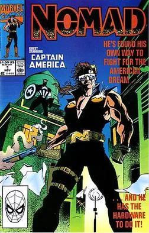
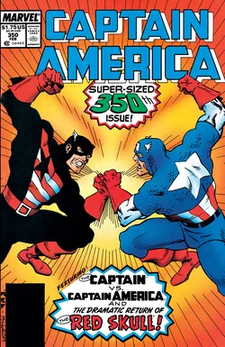
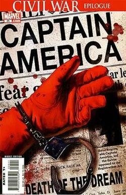

POR QUÉ EL CAPITÁN AMÉRICA ES LA PEOR PESADILLA
DE LOS NACIONALISTAS

Para el nacionalista promedio que solo consume cultura pop a través de memes y camisetas, el Capitán América es el Santo Grial: un soldado musculoso que envuelve su ideología en la bandera estadounidense y obedece ciegamente las órdenes del Tío Sam. Pero hay una verdad incómoda que los sectores más radicales se niegan a aceptar: en las páginas de Marvel Comics, Steve Rogers ha sido históricamente un disidente político radical y un enemigo frontal de los abusos de su propio gobierno.
El "Cap" no es un símbolo de obediencia; es una dura carta de protesta. A lo largo de las décadas, los mejores guionistas del personaje lo han usado para escupirle en la cara al establishment estadounidense a través de tres momentos cumbre que todo fanático de la geopolítica debería conocer:

1. El escándalo de Watergate y el nacimiento de Nomad (1974)
Durante la década de los 70, el guionista Steve Englehart canalizó el asco social por el escándalo de Watergate en el arco de la Secret Empire (Captain America #169-176). En esta historia, Rogers descubre que una red fascista ha infiltrado los niveles más altos del Estado. La confrontación final ocurre nada menos que en la Oficina Oval. Al desenmascarar al líder de la conspiración, se revela implícitamente que el gran villano era el mismísimo Presidente de los Estados Unidos (un claro reflejo de Richard Nixon).
Asqueado por la putrefacción de las instituciones, Rogers tira el escudo y renuncia a su identidad. ¿Su respuesta? Adoptar el alias de Nomad ("El hombre sin patria"), demostrando que la bandera no significaba nada si el Estado que la ondeaba estaba podrido.

2. La huelga contra Reagan y el nacimiento de The Captain (1987)
En los años 80, el escritor Mark Gruenwald puso a Steve Rogers en una encrucijada moral con tintes de Guerra Fría (Captain America #332). Una comisión del gobierno le exige al héroe firmar un contrato para convertirse en un contratista militar privado y responder directamente a las órdenes de la administración de Ronald Reagan.
La respuesta de Rogers en el Pentágono fue legendaria: se negó en rotundo, alegando que él representa al pueblo y al Sueño Americano, no a las agendas de la Casa Blanca. Dejó el traje en el suelo y volvió a operar en las sombras bajo el nombre de The Captain, prefiriendo ser un rebelde antes que un títere de la propaganda estatal.

3. Civil War y el rechazo a la vigilancia masiva (2006)
Inspirado directamente en la paranoia post-9/11 y las políticas de control de la era Bush, el cómic original de Civil War llevó su postura al extremo. Cuando el Congreso aprueba el Acta de Registro de Superhumanos (una alegoría brutal a la pérdida de libertades civiles a cambio de falsa seguridad gubernamental), el Capitán América no se alinea con la ley.
Rogers lidera una resistencia clandestina armada, se convierte en el criminal más buscado por el FBI y se lía a puñetazos contra las fuerzas federales. Prefirió ver arder el sistema antes que permitir que el Estado pisoteara los derechos individuales de los ciudadanos.
EL VEREDICTO FINAL
Quien usa la imagen del Capitán América para defender el chovinismo, la xenofobia o el nacionalismo de manual está cometiendo un analfabetismo cultural absoluto. El Cap de los cómics es un recordatorio incómodo de que el verdadero patriotismo no consiste en lamerle las botas al gobierno de turno, sino en tener el valor de destruirlo desde dentro cuando traiciona los derechos de su gente. Steve Rogers no es el soldado del Imperio; es el eterno defensor del ciudadano de a pie frente a la tiranía corporativa y estatal.
OTROS RUIDOS

Los héroes de cómic más políticos de la historia
Izquierda, antifascismo y derechos humanos en las viñetas.

Plastic Man: El héroe más ridículo y peligroso
El personaje más roto de los cómics que nadie toma en serio.

Batman vs Spider-Man: El Censo del Crimen
¿Quién tiene más enemigos en los cómics?